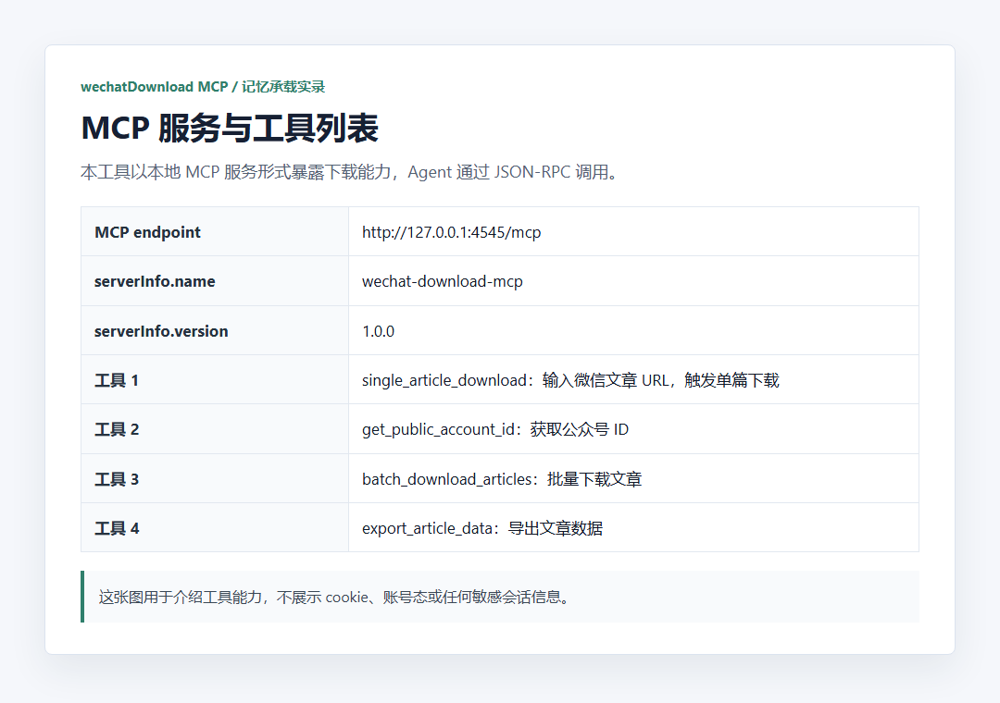
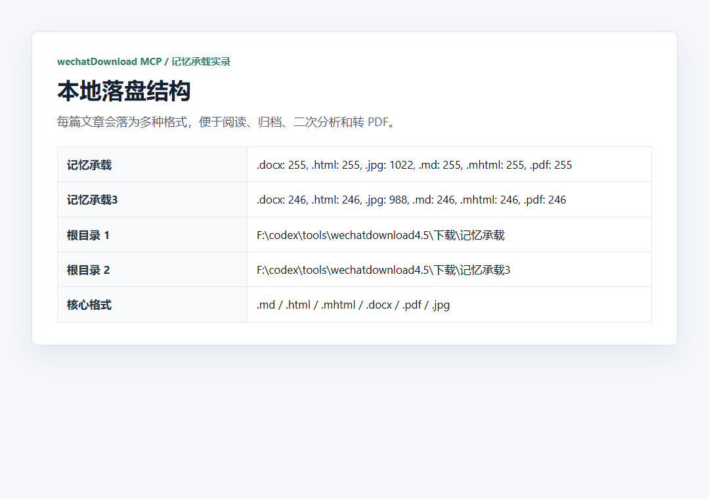

它不是“网页另存为”，而是给 Agent 用的本地下载工具。
`wechatDownload MCP` 的定位很清楚：本地启动一个 MCP 服务，Agent 通过 JSON-RPC 调用，把真实 `mp.weixin.qq.com/s/...` 链接交给工具。工具负责在本地生成 `.md / .html / .mhtml / .docx / .pdf / images` 等文件。
一句话：它解决的是“我已经有公众号 URL，怎么批量、稳定、本地留存正文和素材”。

完整流程是：先拿真实链接，再让 MCP 批量下载。
运行 `F:\codex\tools\wechatdownload4.5\微信公众号批量下载工具4.5.exe`，等待 MCP 服务出现在 `http://127.0.0.1:4545/mcp`。
调用 `initialize` 和 `tools/list`，确认服务名称、版本和可用工具。
从 `reading.quanlitu.com/detail/11481.html` 索引页提取真实 `mp.weixin.qq.com/s/...` 链接。
先抽 3 条链接调用 `single_article_download`，确认单篇下载链路正常。
用脚本逐条触发 545 条链接，并设置延迟，避免过快造成队列阻塞或风控风险。
统计 Markdown 正文数量、账号目录、正文长度，生成最终验收报告。

这次不是“说能下”，而是把证据链留全。
报告里保留了索引页、工具列表、链接池核验、单篇测试、批量触发、本地落盘结构、最终统计和原始下载证据。这里把关键截图按流程放出来。


最终价值在本地落盘：正文、图片、网页快照都能继续分析。
适合后续总结、检索、导入 NotebookLM 或做内容研究。
适合保留网页结构，便于离线查看和后续格式转换。
适合归档、分发、人工阅读和素材复用。



可复用命令：检查服务、批量触发、统计正文。
# 检查 MCP 服务
Invoke-RestMethod -Uri 'http://127.0.0.1:4545/mcp' -Method Post -ContentType 'application/json' -Body '{"jsonrpc":"2.0","id":1,"method":"tools/list","params":{}}'
# 批量触发下载
node F:\codex\tools\memorycarry_mcp_batch_download.js --start=0 --delayMs=1200
# 统计有效正文
python F:\codex\tools\memorycarry_mcp_analyze.py边界必须讲清楚
这个工具很好用，但它不是公众号文章搜索器。它需要你先有 URL 列表；如果微信原文删除，任何依赖 `mp.weixin.qq.com/s/...` 的工具都可能失败。
这次“记忆承载”不是镜像正文下载。索引页只提供链接池，正文来源要核验为真实公众号原文链接。
正确理解：
索引页提供链接 -> MCP 工具接收真实 mp.weixin.qq.com/s/... -> 本地落盘正文和素材
错误理解：
第三方索引页 = 正文来源
镜像页面 = 原文证据源报告：`F:\codex\reports\wechatDownload-MCP工具介绍与记忆承载下载实录-20260522.md`。截图素材：`F:\codex\reports\assets\wechatdownload-mcp-tool-intro-20260522`。